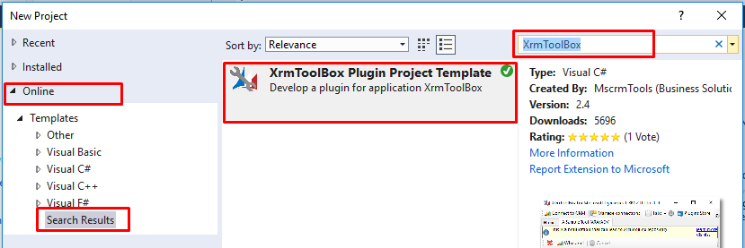
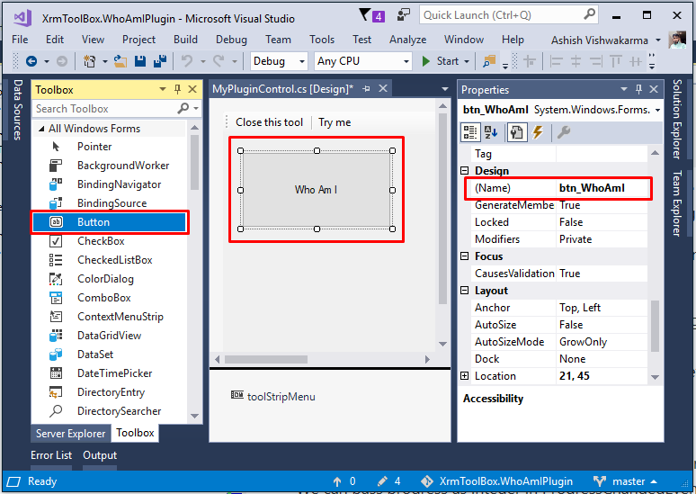
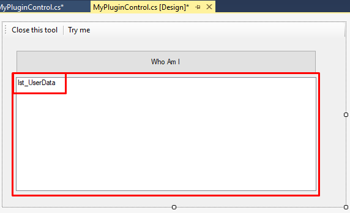
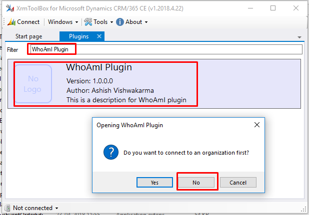
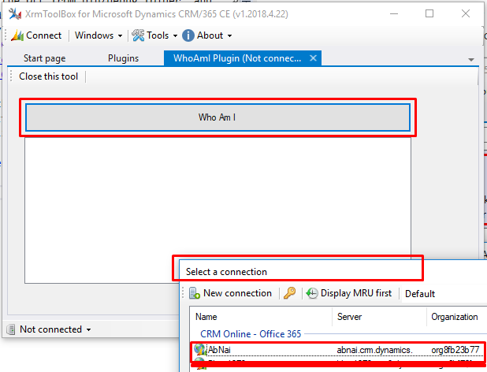
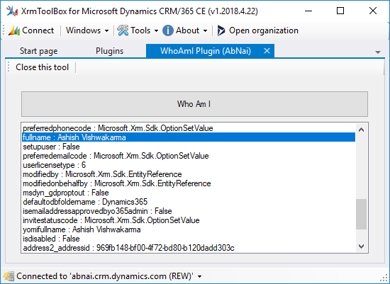

XrmToolBox has plenty of useful plugins, and awesome people like you from community keep adding new plugins to solve Dynamics 365 developer’s day to day hurdles and make them more productive.
Recently I was working on a XrmToolBox plugin (have a look on GitHub Dynamics 365 Bulk Solution Exporter). Let me share my learning experience with you. I would like to thank Santosh Bhagat who has already developed many solutions for the Dynamics Community, has helped me in connection related issues, and Shabbir Hussain who is young and energetic coder, has helped me in Windows Forms related stuff. XrmToolBox is basically a class library, you can create your plugin in 2 ways.
-
Start by taking a class library project and installing XrmToolBoxPackage using nuget. You need to create one Custom Windows Form Control in this approach. I created Dynamics 365 Bulk Solution Exporter this way, because template was not available back then.
-
Tanguy Touzard (Creator of XrmToolBox) has simplified the process by creating XrmToolBox Plugin Project Template for Visual Studio, which configures most of the things automatically. This is preferred way of creating plugins now.
Start Project with XrmToolBox Plugin Project Template
You won’t be getting this project template by default in Visual Studio, to install goto new project dialog, navigate to online section in left pane and search for XrmToolBox in right pane, template will appear in result. install it, Visual Studio need to be restarted in order to install the template.

After installing, create new Project using this template. Framework version should be selected as 4.6.2.

Components of Project
You will get 2 main files in newly created project where you need to work on.
1. MyPlugin.cs
This file contains metadata like name of the plugin, icons and color etc, which you can change according to purpose of your plugin. I am changing name of the plugin to “WhoAmI Plugin”.
using System.ComponentModel.Composition;
using XrmToolBox.Extensibility;
using XrmToolBox.Extensibility.Interfaces;
namespace XrmToolBox.WhoAmIPlugin
{
// Do not forget to update version number and author (company attribute) in AssemblyInfo.cs class
// To generate Base64 string for Images below, you can use https://www.base64-image.de/
[Export(typeof(IXrmToolBoxPlugin)),
ExportMetadata("Name", "WhoAmI Plugin"),
ExportMetadata("Description", "This is a description for my first plugin"),
// Please specify the base64 content of a 32x32 pixels image
ExportMetadata("SmallImageBase64", null),
// Please specify the base64 content of a 80x80 pixels image
ExportMetadata("BigImageBase64", null),
ExportMetadata("BackgroundColor", "Lavender"),
ExportMetadata("PrimaryFontColor", "Black"),
ExportMetadata("SecondaryFontColor", "Gray")]
public class MyPlugin : PluginBase
{
public override IXrmToolBoxPluginControl GetControl()
{
return new MyPluginControl();
}
}
}
2. Settings.cs
This file help you to save/update any configuration value permanently, which will be available when you next time open the tool.
using System;
using System.Collections.Generic;
using System.Linq;
using System.Text;
using System.Threading.Tasks;
namespace XrmToolBox.WhoAmIPlugin
{
/// <summary>
/// This class can help you to store settings for your plugin
/// </summary>
/// <remarks>
/// This class must be XML serializable
/// </remarks>
public class Settings
{
public string LastUsedOrganizationWebappUrl { get; set; }
}
}
3. MyPluginControl.cs
This is a Windows Form Control which is composed of 3 files.
- MyPluginControl.cs[Design] : This files contains the UI where we can pull the controls from Toolbox and make the Plugin UI what user will interact with.
- MyPluginControl.designer.cs : This files contains auto generated code, which is generated while we are placing and configuring controls in UI using drag & drop. we don’t need to directly interact with this file.
- MyPluginControl.cs : This is where we need bind our logic to different events generated from UI, like ButtonClick, OnLoad etc. This file is shown below, is contains some sample code which retrieves count of Account records and displays to user.
using System;
using System.Collections.Generic;
using System.ComponentModel;
using System.Drawing;
using System.Data;
using System.Linq;
using System.Text;
using System.Threading.Tasks;
using System.Windows.Forms;
using XrmToolBox.Extensibility;
using Microsoft.Xrm.Sdk.Query;
using Microsoft.Xrm.Sdk;
using McTools.Xrm.Connection;
namespace XrmToolBox.WhoAmIPlugin
{
public partial class MyPluginControl : PluginControlBase
{
private Settings mySettings;
public MyPluginControl()
{
InitializeComponent();
}
private void MyPluginControl_Load(object sender, EventArgs e)
{
ShowInfoNotification("This is a notification that can lead to XrmToolBox repository", new Uri("https://github.com/MscrmTools/XrmToolBox"));
// Loads or creates the settings for the plugin
if (!SettingsManager.Instance.TryLoad(GetType(), out mySettings))
{
mySettings = new Settings();
LogWarning("Settings not found => a new settings file has been created!");
}
else
{
LogInfo("Settings found and loaded");
}
}
private void tsbClose_Click(object sender, EventArgs e)
{
CloseTool();
}
private void tsbSample_Click(object sender, EventArgs e)
{
// The ExecuteMethod method handles connecting to an
// organization if XrmToolBox is not yet connected
ExecuteMethod(GetAccounts);
}
private void GetAccounts()
{
WorkAsync(new WorkAsyncInfo
{
Message = "Getting accounts",
Work = (worker, args) =>
{
args.Result = Service.RetrieveMultiple(new QueryExpression("account")
{
TopCount = 50
});
},
PostWorkCallBack = (args) =>
{
if (args.Error != null)
{
MessageBox.Show(args.Error.ToString(), "Error", MessageBoxButtons.OK, MessageBoxIcon.Error);
}
var result = args.Result as EntityCollection;
if (result != null)
{
MessageBox.Show($"Found {result.Entities.Count} accounts");
}
}
});
}
/// <summary>
/// This event occurs when the plugin is closed
/// </summary>
/// <param name="sender"></param>
/// <param name="e"></param>
private void MyPluginControl_OnCloseTool(object sender, EventArgs e)
{
// Before leaving, save the settings
SettingsManager.Instance.Save(GetType(), mySettings);
}
/// <summary>
/// This event occurs when the connection has been updated in XrmToolBox
/// </summary>
public override void UpdateConnection(IOrganizationService newService, ConnectionDetail detail, string actionName, object parameter)
{
base.UpdateConnection(newService, detail, actionName, parameter);
mySettings.LastUsedOrganizationWebappUrl = detail.WebApplicationUrl;
LogInfo("Connection has changed to: {0}", detail.WebApplicationUrl);
}
}
}
This file has few other examples too like ShowInfoNotification(), LogWarning() & UpdateConnection() etc. for a complete list of available methods you can check PluginContolBase class from which this is inherited to.
Understanding the Framework
Here in this sample we will me making WhoAmIRequest and will be showing response to user. Before that you should have a look at GetAccounts() that how it is written. We need to understand 2 main methods while getting started one is WorkAsync(WorkAsyncInfo info) and other is ExecuteMethod(Action action).
In XrmToolBox plugins all requests to server should be made asynchronously but here is a twist, we won’t be using async & await, instead WorkAsync(WorkAsyncInfo info) is provided in XrmToolBox.Extensibility namespace, Let’s look into WorkAsyncInfo class of framework which is main class to execute code of any plugin.
using System;
using System.ComponentModel;
using System.Windows.Forms;
namespace XrmToolBox.Extensibility
{
public class WorkAsyncInfo
{
public WorkAsyncInfo();
public WorkAsyncInfo(string message, Action<DoWorkEventArgs> work);
public WorkAsyncInfo(string message, Action<BackgroundWorker, DoWorkEventArgs> work);
public object AsyncArgument { get; set; }
public Control Host { get; set; }
public bool IsCancelable { get; set; }
public string Message { get; set; }
public int MessageHeight { get; set; }
public int MessageWidth { get; set; }
public Action<RunWorkerCompletedEventArgs> PostWorkCallBack { get; set; }
public Action<ProgressChangedEventArgs> ProgressChanged { get; set; }
public Action<BackgroundWorker, DoWorkEventArgs> Work { get; set; }
}
}
You can look into constructors and properties yourself, let me talk about callbacks available, which are Work, PostWorkCallback & ProgressChanged.
-
Work : Here we do our main processing, it has 2 arguments BackgroundWorker & DoWorkEventArgs.
-
PostWorkCalllBack : Once Work is completed, this is triggered to show output to user. This gets the results from RunWorkerCompletedEventArgs parameter, which is returned from of Work callback.
-
ProgressChanged : If our process is long running, Unlike Message = “Getting accounts”; in GetAccounts(), we must show the progress to user. We can pass progress as integer in ProgressChangedEventArgs parameter.
ExecuteMethod(Action action) helps to get rid of connection hurdles for plugin developer, all methods which require CRM connection should be called from ExecuteMethod which accepts Action as parameter. If CRM is not connected then it will show popup to connect before executing method.
Implementing & Consuming WhoAmI()
Open MyPluginControl.cs[Design] and place a Button control in panel. change name property to btn_WhoAmI, optionally you can change other properties and decorate.

Add one list box also with name lst_UserData below button to show current user’s data.

Double click on this button to create event and open code-behind file(MyPluginControl.cs) and write below code.
private void btn_WhoAmI_Click(object sender, EventArgs e)
{
// calling WhoAmI() from ExecuteMethod so connection will be smooth
ExecuteMethod(WhoAmI);
}
private void WhoAmI()
{
WorkAsync(new WorkAsyncInfo
{
// Showing message until background work is completed
Message = "Retrieving WhoAmI Information",
// Main task which will be executed asynchronously
Work = (worker, args) =>
{
// making WhoAmIRequest
var whoAmIResponse = (WhoAmIResponse)Service.Execute(new WhoAmIRequest());
// retrieving details of current user
var user = Service.Retrieve("systemuser", whoAmIResponse.UserId, new Microsoft.Xrm.Sdk.Query.ColumnSet(true));
// placing results to args, which will be sent to PostWorkCallBack to display to user
var userData = new List<string>();
foreach (var data in user.Attributes)
userData.Add($"{data.Key} : {data.Value}");
args.Result = userData;
},
// Work is completed, results can be shown to user
PostWorkCallBack = (args) =>
{
if (args.Error != null)
MessageBox.Show(args.Error.ToString(), "Error", MessageBoxButtons.OK, MessageBoxIcon.Error);
else
// Binding result data to ListBox Control
lst_UserData.DataSource = args.Result;
}
});
}
Congratulations! You are done with your first XrmToolBox plugin now. Let’s test it now.
Test Your Plugin
Build your code and grab the DLL from bin/debug folder, and place it in %AppData%\MscrmTools\XrmToolBox\Plugins folder. (You may refer to my previous article Installing XrmToolBox Plugins in No Internet OnPremises Environments).
Open XrmToolBox and search for your plugin, click to open it, when it asks to connect, click No, so you can verify ExcuteMethod functionality.

Here is your brand new plugin, all created by yourself. Click on Who Am I Button, it will ask to connect an organization first, because we have used ExecuteMethod() here.

Connect to an organization, after connecting to CRM, it will show the retrieving message which is set in our Message property is WhoAmI(). Finally it will show all information about current user in ListBox.

Get complete source code here
This DLL can be shared with anyone and they can use it. But to make it available to everyone you need to publish it, which I will discuss in next article.